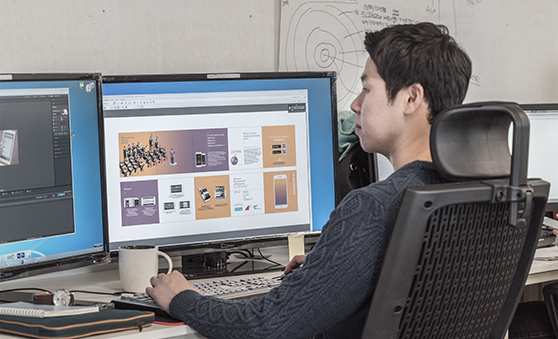

The value of video content are continuously increasing.
Outstanding videos must be not only aesthetically pleasing but also strategic and sensuous.
From the planning stage, by thoroughly analyzing customers’ intention and objectives of a video production, we present clear and creative strategies that can appeal to viewers, and our directing staff participates from planning to post -production to ensure the best quality at each step.

In the next step, we use various effects and computer graphics to enhance the visual completeness of the videos. Through mixing process with our high quality sounds, strong synergy effects complete the production.